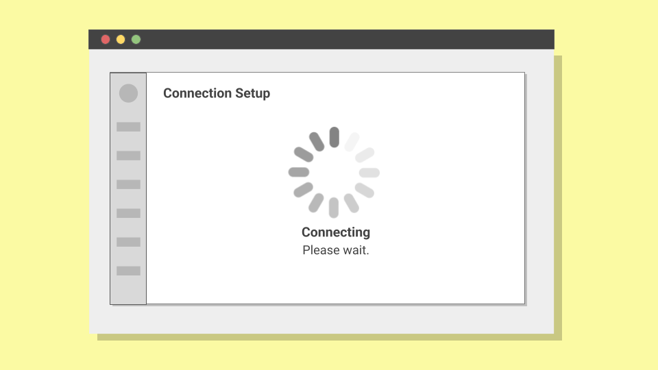

Designing a Comprehensive Empty State Framework
In SaaS platforms, empty states are often afterthoughts. But for 42% of users abandoning the free trial of a rental management platform within 10 minutes due to unclear directions, these blank screens were the key to solving this and increasing user engagement.
Methodology Note
- Company: Anonymized for confidentiality reasons
- Data: Qualitative usability testing combined with behavioral validation
- Purpose: Demonstrate systematic empty state design methodology
- Tools: Figma, UserTesting
- Target users: Rental property managers
The Challenge
This rental management platform helped rental property managers centralize all the rental properties they manage and list on booking channels like Airbnb and Booking.com. While old customers found the experience seamless, prospects starting their free trial hit walls that were challenging to overcome.
A quick check-in with the product team revealed that around 42% of new users abandoned the property setup flow within the first 10 minutes. This happened most often at moments users faced empty states. The question was: Did users fail to understand what to do, were they unable to find the next step, or did they simply give up due to lack of context?
Empty states were treated by the company as blank canvases, rather than strategic opportunities to guide users toward value. I needed to find out whether better empty state design could reduce abandonment and help more users reach their first successful property listing.
The Approach
As one of the UX writers in this SaaS company, I partnered with a product designer. We then audited all empty states across the free trial journey. Each empty state represented a moment where users encountered blank screens, loading processes, or missing content.
The goal was to turn empty screens into strategic user education moments. Rather than leaving users to guess what should happen next, we wanted to provide clear guidance, set appropriate expectations, and maintain momentum toward key actions.

After thorough analysis of the free trial journey, I identified five empty state main scenarios, each requiring a different approach:
- A property must be added
- Each property must be connected to a booking channel
- Estimated connection time must be communicated
- If a connection fails, a solution must be provided
- A connection must be established for bookings to appear
Upon realizing these five empty states had different purposes and conditions, I decided to design a scalable framework that could guide future decisions. This new framework needed to list the scenarios listed above and include new, unprecedented ones.
Before I introduce this framework, I will illustrate two examples of empty state improvements, specifically "Empty state 1" and "Empty State 2". Then, I will present a complete framework that covers a comprehensive list of all possible scenarios.
First, I reworked the initial screen (Empty State 1) by guiding users in adding a property, then I reframed expectations once they were forced to wait while their property connected to an external booking channel (Empty State 2).
To validate this approach, I developed a two-phase methodology combining qualitative usability testing with behavioral validation of implementation results.
Test Overview
In the first phase, I identified the root causes of abandonment through qualitative usability testing. After hearing about bounce rates spiking during property setup, I spoke with the sales manager to understand customer feedback patterns. I then scheduled moderated usability testing sessions to uncover specific friction points.
The second phase focused on behavioral validation for scenarios where we expected large effect sizes. For system processes like booking channel connections, I used quick validation testing with smaller samples.
Because I expected substantial behavioral differences with my new proposal, I was able to work with a small sample size, saving costs while maintaining some level of statistical accuracy.
Following validation, I implemented changes and tracked performance at scale, using control flows to account for external factors that might influence user behavior during the measurement period.
The Process
The property listing page for new users presented a blank state, resulting in a high bounce rate. After consulting with the sales manager about customer onboarding feedback, I conducted a moderated usability test session with 5 participants to identify the specific friction points that caused this.
According to Nielsen Norman Group, testing with even 5 participants uncovers approximately 80% of usability problems, making this sample size sufficient for identifying major interface issues.
Out of 5 participants, 4 scanned the empty state stating "no properties yet", looked for obvious next steps, and eventually expressed frustration about not knowing how to proceed.
The consistent pattern across all participants confirmed something we weren't expecting: the problem wasn't in the empty state, it was in the platform design.
The test revealed that participants consistently failed to find the primary action button. The only way to add a property was through a small plus icon tucked in the top-right corner of the interface, and only one participant found it quickly.

The plus sign icon being tucked away was a critical barrier to new users adding their property during their free trial.
The redesigned version replaced the "no properties yet" screen with a centered call-to-action: "Add your first property" accompanied by a brief explanation of what would happen next.

This change represented a fundamental shift from assuming users would discover the action to explicitly guiding them.
Following implementation across all new user accounts, property creation completion rates during free trial increased from 34% to 67% over the first month across 312 property setup attempts. The improvement was immediate and sustained, validating that the usability testing had accurately identified the core barrier to user progression.
Following the empty state redesign, the product team focused on rethinking the plus icon design and placement.
From Uncertainty to Confidence
After adding their first property, users still needed to connect to the booking channels their property was listed on. This was an essential step for users to view and manage bookings directly from the platform.
The connection process required users to wait anywhere from four to six minutes while the system established an API connection with platforms like Airbnb and Booking.com. During this time, users saw a "Connecting. Please wait." message with no indication of progress or additional context.
Because of authentication constraints, closing the window caused the connection to fail. To prevent this, we needed to set expectations clearly.
To test whether setting clear expectations would reduce abandonment, I conducted an unmoderated test session with 18 participants split into two groups of 9. All UI mockups were created with the help of the product designer I teamed up with. We used high-fidelity screens and added animations to accurately represent the real experience.
The sample size of this test was appropriate because I expected a large behavioral difference (greater than 60%) between the two approaches. For such substantial effect sizes, small samples can reliably detect meaningful differences without requiring complex statistical analysis.
Of the 9 participants who encountered the original vague messaging, 8 abandoned the connection process before it completed (88.9% abandonment rate). Some assumed the system had frozen, others grew impatient, and a few simply closed the browser tab.
The redesigned temporary state provided specific information: "Connecting to {channel}. This may take up to 6 minutes. Please don't close this window." This message accomplished three things: it explained what was happening, with a variable for each channel name, set expectations about timing, and provided guidance.
In the second round, 8 participants waited up to 6 minutes as instructed, with several opening new tabs to continue other tasks while monitoring the connection progress. Only 1 participant failed to follow instructions, representing a 11.1% abandonment rate.
This 77.8% difference between the two groups represented exactly the type of large behavioral change the testing was designed to detect. When effect sizes are this substantial, the practical significance is clear. Fisher's exact test confirmed this: p= 0.0007, indicating such an extreme difference would occur by chance less than 0.07% of the time.
To validate this improvement at scale, I tracked connection abandonment rates before and after implementation. The results aligned with the behavioral testing: abandonment during booking channel setup dropped from 45% to 12% over 374 connection attempts.
Also, to ensure this wasn't due to external factors like seasonal changes or product updates, I analyzed abandonment rates on three other flows that remained unchanged during the measurement period: user registration completion, billing setup flow, and property verification process. These flows showed no significant variation, confirming that the improvement was specifically attributable to the messaging change.
The Six-Scenario Framework
As previously stated, I had identified six empty state main scenarios, each requiring different approaches. To make this framework useful, I developed validation criteria for each scenario, accounting for user agency, system constraints, and business objectives:
First-Use Scenario
This scenario represents the first moment users encounter a feature. This is a critical juncture for introducing the purpose of the feature, its key benefits, and how they connect to user goals. The depth of this introduction varies significantly across products and features.

Some self-explanatory features may not require extensive details nor urgent action. However, users may sometimes benefit from taking action under particular circumstances.
For example, users discovering a custom domain feature for their web apps could be encouraged to add an existing domain. Encouraging users to take action promotes feature adoption, engagement, and helps them progress through their user journey.
Key question: Do users need context about what this feature does, or are they ready to take action?
This determines whether to inform and explain, or whether to provide a direct path, usually in the shape of a CTA, for users to take initial action.
Advice: Use action patterns for features that benefit from immediate engagement. Reserve inform patterns for complex features requiring context before use.
Missing External Factor Scenarios
Sometimes users face blockers due to unmet conditions. This moment requires assessing whether users have agency to resolve a dependency or if they must wait for external resolution. Your approach should depend on how much control the user has and the nature of the dependency itself.
In some cases, users have no control over the blocking factor. For example, a user waiting for admin approval cannot take meaningful action to expedite the process. These situations require clear communication while avoiding false expectations.
In other cases, users can directly resolve the dependency themselves. For instance, users from the original example, who saw an empty dashboard on their property management platform. By guiding them to add a property, we empower users to move forward and promote feature adoption.
Key question: Can users do something or must they wait for external factors?
Dependencies users can't control, like admin approval, call for transparency. Dependencies users can resolve, such as integrations or connections, benefit from guidance and a clear CTA.
Decision: Match your approach to user agency. Provide clear next steps when users can act, transparent communication when they cannot.
Failure State Scenarios
These scenarios emerge when users encounter broken processes or unexpected interruptions. This moment is critical for maintaining user trust, as they will need immediate guidance to solve the issue. Unlike other scenarios, failure states always require an action-oriented approach.
These situations demand comprehensive support. Like errors, system failures also require an explanation. While user errors need corrective guidance, failures need alternative paths. The depth of explanation should match the severity and user impact of the failure.
Users experiencing failures benefit from structured recovery options. Provide clear error explanation, retry options, and escalation paths if the problem persists. This reduces frustration and maintains user confidence in the system.
Key question: What recovery actions can users take?
Decision: Provide guidance with clear recovery paths. Include escalation options for unresolvable or uncertain issues.
No Results Scenarios
When users search or filter results, they might get an empty screen. These moments should turn into an opportunity to help users take action, instead of abandoning what they were doing. The response should feel supportive, avoiding any implication of user error.

A simple "no results found" with filter adjustment suggestions is enough when the search intent may be clear and the refinement path is obvious. In more complex scenarios, users might benefit from broader guidance.
For example, users searching an empty knowledge base should be shown alternative discovery methods or related topics. This promotes continued engagement and helps users find value through different paths.
Key question: Do users need help with their current approach, or do they need alternative discovery methods?
Above all, it's important to avoid blaming users or making them think they did something wrong.
Decision: Guide users in refining their search. Offer alternative discovery methods for unsuccessful searches.
User-Initiated Empty Scenarios
Users can deliberately create empty states by archiving, deleting, or hiding content. For intentional actions that don't require confirmation modals, this moment requires acknowledging the user's intentional action while providing pathways forward.
Your approach should respect user agency while offering helpful next steps. Simple actions like clearing a folder don't require extensive acknowledgment, since the user's intent is clear and the empty state is expected.
In some situations, users might benefit from expanded options. For instance, users who archive all their projects could be encouraged to continue their workflow.
Key question: Do users need simple confirmation of their action, or would they benefit from expanded options and pathways? Your approach should acknowledge the user's intentional action while providing options to undo, view hidden items, or create new content.
Decision: Acknowledge user intent with minimal friction. Provide recovery options and forward paths without overwhelming users.
Temporary State Scenarios
Sometimes users encounter empty states due to ongoing processes like loading, syncing, or data processing. In these moments, we should manage user expectations to prevent abandonment during wait times. Your approach should provide clear communication about timing and process status.
As in the earlier example with property connections, users should be informed with estimated completion times, whenever possible. This maintains engagement and reduces anxiety about system functionality.
Key question: What information do users need to feel confident while waiting, and what alternatives do they have?
Whenever possible, try to manage user expectations about timing and explain what's happening during waiting time.
Decision: Always provide timing expectations and process transparency. Include alternative actions to maintain engagement.
Outcome
The immediate outcomes from the two illustrated examples were clear: property setup completion rates improved from 34% to 67% across 312 attempts. Property connection abandonment rates, on the other hand, dropped from 45% to 12% across 374 attempts.
Results
Around six months after developing this framework, I touched base with the product team to assess its impact. Product designers reported using the six-scenario model for new feature development.
More importantly, the methodology set a precedent for systematic UX writing. By establishing clear criteria for each scenario type, the team gained a repeatable model for empty state decisions.
This outcome demonstrated that empty states are fundamental to how users understand and progress through a product. When approached systematically, they become strategic touchpoints that help us guide users toward success.